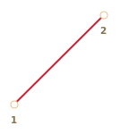
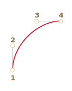
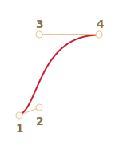
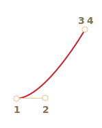
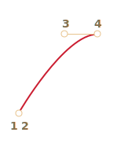
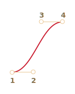
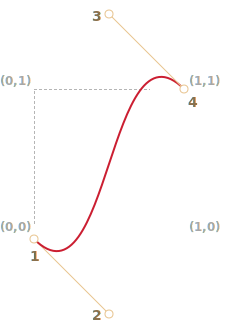

CSS 动画可以在不借助 Javascript 的情况下做出一些简单的动画效果。
你也可以通过 Javascript 控制 CSS 动画，使用少量的代码，就能让动画表现更加出色。
CSS 过渡的理念非常简单，我们只需要定义某一个属性以及如何动态地表现其变化。当属性变化时，浏览器将会绘制出相应的过渡动画。
也就是说：我们只需要改变某个属性，然后所有流畅的动画都由浏览器生成。
举个例子，以下 CSS 会为 backgroud-color 的变化生成一个 3 秒的过渡动画：
.animated {
transition-property: background-color;
transition-duration: 3s;
}现在，只要一个元素拥有名为 .animated 的类，那么任何背景颜色的变化都会被渲染为 3 秒钟的动画。
单击以下按钮以演示动画：
<button id="color">Click me</button>
<style>
#color {
transition-property: background-color;
transition-duration: 3s;
}
</style>
<script>
color.onclick = function() {
this.style.backgroundColor = 'red';
};
</script>CSS 提供了四个属性来描述一个过渡：
transition-propertytransition-durationtransition-timing-functiontransition-delay之后我们会详细介绍它们，目前我们需要知道，我们可以在 transition 中以 property duration timing-function delay 的顺序一次性定义它们，并且可以同时为多个属性设置过渡动画。
请看以下例子，点击按钮生成 color 和 font-size 的过渡动画：
<button id="growing">Click me</button>
<style>
#growing {
*!*
transition: font-size 3s, color 2s;
*/!*
}
</style>
<script>
growing.onclick = function() {
this.style.fontSize = '36px';
this.style.color = 'red';
};
</script>现在让我们一个一个展开看这些属性。
在 transition-property 中我们可以列举要设置动画的所有属性，如：left、margin-left、height 和 color。
不是所有的 CSS 属性都可以使用过渡动画，但是它们中的大多数都是可以的。all 表示应用在所有属性上。
transition-duration 允许我们指定动画持续的时间。时间的格式参照 CSS 时间格式：单位为秒 s 或者毫秒 ms。
transition-delay 允许我们设定动画开始前的延迟时间。例如，对于 transition-delay: 1s，动画将会在属性变化发生 1 秒后开始渲染。
你也可以提供一个负值。那么动画将会从整个过渡的中间时刻开始渲染。例如，对于 transition-duration: 2s，同时把 delay 设置为 -1s，那么这个动画将会持续 1 秒钟，并且从正中间开始渲染。
这里演示了数字从 0 到 9 的动画，使用了 CSS translate 方法：
[codetabs src="digits"]
如下在 tranform 属性上应用动画：
#stripe.animate {
transform: translate(-90%);
transition-property: transform;
transition-duration: 9s;
}在以上的例子中，JavaScript 把 .animate 类添加到了元素上，由此触发了动画：
stripe.classList.add('animate');我们也可以『从中间』开始，也就是说从某个特定数字开始，比方说，从当前的时间的秒数开始。这就要用到负的 transition-delay。
此处，如果你单击这个数字，那么它会从当前的秒数开始渲染：
[codetabs src="digits-negative-delay"]
只需添加一行 JavaScript 代码：
stripe.onclick = function() {
let sec = new Date().getSeconds() % 10;
*!*
// for instance, -3s here starts the animation from the 3rd second
stripe.style.transitionDelay = '-' + sec + 's';
*/!*
stripe.classList.add('animate');
};时间函数描述了动画进程在时间上的分布。它是先慢后快还是先快后慢？
乍一看，这可能是最复杂的属性了，但是稍微花点时间，你就会发现其实也很简单。
这个属性接受两种值：一个贝塞尔曲线（Bezier curve）或者阶跃函数（steps）。我们先从贝塞尔曲线开始，这也是较为常用的。
时间函数可以用贝塞尔曲线描述，通过设置四个满足以下条件的控制点：
(0,0)。(1,1)。x 必须位于 0..1 之间，y 可以为任意值。CSS 中设置一贝塞尔曲线的语法为：cubic-bezier(x2, y2, x3, y3)。这里我们只需要设置第二个和第三个值，因为第一个点固定为 (0,0)，第四个点固定为 (1,1)。
时间函数描述了动画进行的快慢。
x 轴表示时间：0 —— 开始时刻，1 —— transition-duration的结束时刻。y 轴表示过程的完成度：0 —— 属性的起始值，1 —— 属性的最终值。最简单的一种情况就是动画匀速进行，可以通过设置曲线为 cubic-bezier(0, 0, 1, 1) 来实现。
看上去就像这样：

...正如我们所见，这就是条直线。随着时间 x 推移，完成度 y 稳步从 0 增长到 1。
例子中的列车匀速地从左侧移动到右侧：
[codetabs src="train-linear"]
这个里面的 CSS 就是基于刚才那条曲线的：
.train {
left: 0;
transition: left 5s cubic-bezier(0, 0, 1, 1);
/* JavaScript sets left to 450px */
}...那么，我们如果表现出减速行驶的列车呢？
我们可以使用另一条贝塞尔曲线：cubic-bezier(0.0, 0.5, 0.5 ,1.0)。
图像如下：

正如我们所见，这个过程起初很快：曲线开始迅速升高，然后越来越慢。
这是实际的效果演示：
[codetabs src="train"]
CSS：
.train {
left: 0;
transition: left 5s cubic-bezier(0, .5, .5, 1);
/* JavaScript sets left to 450px */
}CSS 提供几条内置的曲线：linear、ease、ease-in、ease-out 和 ease-in-out。
linear 其实就是 cubic-bezier(0, 0, 1, 1) 的简写 —— 一条直线，刚刚我们已经看过了。
其它的名称是以下贝塞尔曲线的简写：
ease* |
ease-in |
ease-out |
ease-in-out |
|---|---|---|---|
(0.25, 0.1, 0.25, 1.0) |
(0.42, 0, 1.0, 1.0) |
(0, 0, 0.58, 1.0) |
(0.42, 0, 0.58, 1.0) |
|  |  |  |  |
* —— 默认值，如果没有指定时间函数，那么将使用 ease 作为默认值。
所以，我们可以使用 ease-out 来表现减速行驶的列车：
.train {
left: 0;
transition: left 5s ease-out;
/* transition: left 5s cubic-bezier(0, .5, .5, 1); */
}但是这看起来有点怪怪的。
贝塞尔曲线可以使动画『超出』其原本的范围。
曲线上的控制点的 y 值可以使任意的：不管是负值还是一个很大的值。如此，贝塞尔曲线就会变得很低或者很高，让动画超出其正常的范围。
在一下的例子中使用的代码：
.train {
left: 100px;
transition: left 5s cubic-bezier(.5, -1, .5, 2);
/* JavaScript sets left to 400px */
}left 本该在 100px 到 400px 之间变化。
但是如果你点击列车，你会发现：
left 会变得小于 100px。400px。400px。[codetabs src="train-over"]
为什么会这样？看一眼给定的贝塞尔曲线的图像你就会明白了。

我们把第二个点的 y 坐标移动到了小于 0 的位置，同时把第三个点的 y 坐标移动到了大于 1 的位置，因此曲线已经不再像一个四分之一圆了。y 坐标超出了常规的 0..1 的范围。
正如我们所知，y 表示『动画进程的完成度』。y = 0 表示属性的初始值，y = 1 则表示属性的最终值。因此，y < 0 意味着属性值要比初始值小，而 y > 1 则表明属性值要比最终值大。
当然了，-1 和 2 还是比较缓和的值。如果我们把 y 设为 -99 和 99，那么列车将会偏离地更远。
但是，如何针对特定的任务寻找到合适的贝塞尔曲线呢？事实上，有很多工具可以帮到你。比方说，我们可以利用这个网站：http://cubic-bezier.com/。
时间函数 steps(number of steps[, start/end]) 允许你让动画分段进行，number of steps 表示需要拆分为多少段。
让我们通过一个数字的例子来演示一下。我们将会让数字以离散的方式变化，而不是以连续的方式。
为了达到效果，我们把动画拆分为 9 段：
#stripe.animate {
transform: translate(-90%);
transition: transform 9s *!*steps(9, start)*/!*;
}step(9, start) 生效时：
[codetabs src="step"]
steps 的第一个参数表示段数。这个过渡动画将会被拆分为 9 个部分（每个占 10%）。时间间隔也会以同样的方式被拆分：9 秒会被分割为多个时长 1 秒的间隔。
第二个参数可以取 start 或 end 两者其一。
start 表示在动画开始时，我们需要立即开始第一段的动画。
可以观察到，在动画过程中：当我们单击数字之后，它会立马变为 1（即第一段），然后在下一秒开始的时候继续变化。
具体的流程如下：
0s —— -10%（在第一秒开始的时候立即变化）1s —— -20%8s -- -80%另一个值 end 表示：改变不应该在最开始的时候发生，而是发生在每一段的最后时刻。
其流程如下：
0s —— 01s —— -10%（在第一秒结束时第一次变化）2s —— -20%9s —— -90%step(9, end) 生效时：
[codetabs src="step-end"]
另外还有一些简写值：
step-start —— 等同于 steps(1, start)。即：动画立刻开始，并且只有一段。也就是说，会立刻开始，紧接着就结束了，宛如没有动画一样。step-end —— 等同于 steps(1, end)。即：在 transition-duration 结束时生成一段动画。这些值很少会被用到，因为它们并不算是真正的动画，而是单步的变化。
CSS 动画完成后，会触发 transitionend 事件。
这被广泛用于在动画结束后执行某种操作。我们也可以用它来串联动画。
举例来说，下面的小船会在点击后向右浮动，然后再回来。而且，每一次都会向右移动地更远一点：
[iframe src="boat" height=300 edit link]
这个动画通过 go 函数初始化，并且在每次动画完成后都会重复执行，并转变方向：
boat.onclick = function() {
//...
let times = 1;
function go() {
if (times % 2) {
// 向右移动
boat.classList.remove('back');
boat.style.marginLeft = 100 * times + 200 + 'px';
} else {
// 向左移动
boat.classList.add('back');
boat.style.marginLeft = 100 * times - 200 + 'px';
}
}
go();
boat.addEventListener('transitionend', function() {
times++;
go();
});
};transitionend 的事件对象有几个特定的属性：
event.propertyName
：当前完成动画的属性，这在我们同时为多个属性加上动画时会很有用。
event.elapsedTime
：动画完成的时间（按秒计算），不包括 transition-delay。
我们可以通过 CSS 提供的 @keyframes 规则整合多个简单的动画。
它会指定某个动画的名称以及相应的规则：哪个属性，何时以及何地渲染动画。然后使用 animation 属性把动画绑定到相应的元素上，并为其添加额外的参数。
这里有个详细的例子：
<div class="progress"></div>
<style>
*!*
@keyframes go-left-right { /* 指定一个名字："go-left-right" */
from { left: 0px; } /* 从 left: 0px 开始 */
to { left: calc(100% - 50px); } /* 移动至 left: 100%-50px */
}
*/!*
.progress {
*!*
animation: go-left-right 3s infinite alternate;
/* 把动画 "go-left-right" 应用到元素上
持续 3 秒
持续次数：infinite
每次都改变方向
*/
*/!*
position: relative;
border: 2px solid green;
width: 50px;
height: 20px;
background: lime;
}
</style>有许多关于 @keyframes 的文章以及一个详细的规范说明。
很可能你并不需要经常用到 @keyframes，除非你的网站上有一直在运动的元素。
CSS 动画允许你为一个或者多个属性的变化创建丝滑流畅（也可能不是）的过渡动画。
它们适用于大多数的动画需求。我们也可以使用 JavaScript 创建动画，下一章将会详细讲解相关内容。
相对于 JavaScript 动画，CSS 动画存在的特点如下：
+ 简单的事，简单地做。
+ 快速，而且对 CPU 造成的压力很小。
- JavaScript 动画更加灵活。它们可以实现任何动画逻辑，比如某个元素的爆炸效果。
- 不仅仅只是属性的变化。我们还可以在 JavaScript 中生成新元素用于动画。本节已经介绍了可以使用 CSS 实现的主要动画类型，而且 transitionend 还允许在动画结束后执行 JavaScript 代码，因此它可以方便得与代码结合起来。
但是在下一节，我们将会学习一些 JavaScript 动画来实现更加复杂的效果。